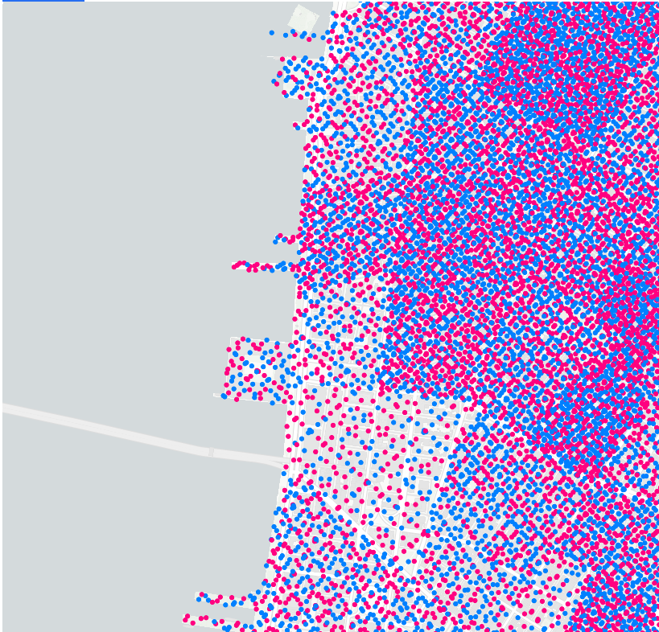
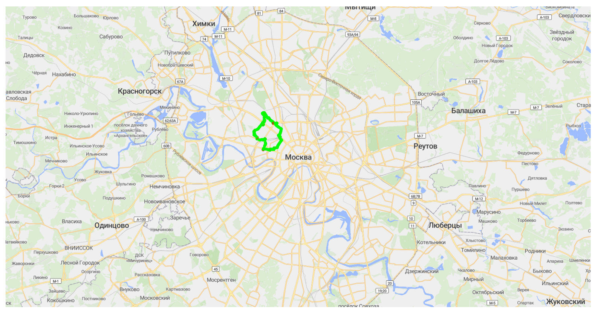

Маппим точки на карту
Предлагаемая архитектура:
Предлагаю для отображения точке на карте использовать апи запрос и стриминг точек в сокете. При первой инициализации карты (при первом отображении) отправляете апи запрос, который возвращает все точки на карте -> отображаем их. Сразу после этого начинаем отображать точки, пришедшие из сокета
Пример файла апи
api.ts:
import axios, { AxiosResponse } from "axios";
export const instance = axios.create({
baseURL: import.meta.env.VITE_API_URL,
});
export const api = {
async getMapData() {
const response = await instance.get(`/api/map_data`);
return response.data;
},
};
для baseURL у вас должна быть переменная окружения (если используете сборщик VITE, то все переменные окружение должны начинаться с VITE_ ) в .env файле:
Пример для локального использования
VITE_API_URL=http://localhost:5173
В результате baseURL будет иметь вид:
baseURL: http://localhost:5173//api/map_data
Пример сокета с использованием Zustand (хранилище)
socket-provider.ts:
export interface MapDataPoint {
time: string
lat: number
lon: number
data: {
rsrp: number | null
}
}
export const useTrialsEventsPointsStore = create<{
trialsEventsPoints: MapDataPoint | null
setTrialsEventsPoints: (trialsEventsPoints: MapDataPoint) => void
}>(set => ({
trialsEventsPoints: null,
setTrialsEventsPoints: trialsEventsPoints => set({ trialsEventsPoints })
}))
export const useTrialsEventsWebSocketStore = create<{
trialsEventsSocket: WebSocket | null
isTrialsEventsConnected: boolean
connectTrialsEvents: () => void
disconnectTrialsEvents: () => void
}>(set => ({
trialsEventsSocket: null,
isTrialsEventsConnected: false,
connectTrialsEvents: () => {
const { isTrialsEventsConnected, disconnectTrialsEvents, trialsEventsSocket } =
useTrialsEventsWebSocketStore.getState()
if (isTrialsEventsConnected && trialsEventsSocket?.readyState === WebSocket.OPEN) {
console.log('Trials WebSocket already connected, skipping...')
return
}
if (trialsEventsSocket) {
disconnectTrialsEvents()
}
try {
const trialsEventsSocket = new WebSocket(import.meta.env.VITE_WS_TRIALS_EVENTS)
trialsEventsSocket.onopen = () => {
console.log('Connected to Trials WebSocket')
set({ isTrialsEventsConnected: true })
}
trialsEventsSocket.onmessage = event => {
if (event.data === 'PONG') return
const parsedData = JSON.parse(event.data)
if (parsedData.name === 'map_point' && parsedData.data) { //map_point - для пример, здесь должно быть название (name) ивента из вашего сокет соединения
useTrialsEventsPointsStore.getState().setTrialsEventsPoints(parsedData.data)
}
}
trialsEventsSocket.onclose = () => {
console.log('Disconnected from Trials WebSocket')
set({ isTrialsEventsConnected: false })
}
trialsEventsSocket.onerror = error => {
console.error('Trials WebSocket error:', error)
}
set({ trialsEventsSocket })
} catch (error) {
console.error('Failed to create Trials WebSocket connection:', error)
}
},
disconnectTrialsEvents: () => {
const { trialsEventsSocket } = useTrialsEventsWebSocketStore.getState()
if (trialsEventsSocket) {
trialsEventsSocket.close()
}
set({
trialsEventsSocket: null,
isTrialsEventsConnected: false
})
}
}))
Пример файла реализации карты
Так как нам необходимо отобразить точки, то выберем для этого соответствующий метод среди тех, которые нам предлагает Deck.gl. По названию не трудно определить, что это будет - ScatterplotLayer
https://deck.gl/examples/scatterplot-layer
Пример из документации: 
map.tsx:
import { MapViewState } from '@deck.gl/core'
import { ScatterplotLayer } from '@deck.gl/layers'
import { DeckGL } from '@deck.gl/react'
import { Map as MapLibreMap, NavigationControl } from 'react-map-gl/maplibre'
import { useEffect, useState } from 'react'
import * as styles from './map.style'
import { api } from '~/shared/api/api'
import { useTrialsEventsWebSocketStore } from '~/shared/sockets/socket-provider'
import { useTrialsEventsPointsStore } from '~/shared/sockets/socket-provider'
export interface MapDataPoint {
time: string
lat: number
lon: number
data: {
rsrp: number | null
}
}
const INITIAL_VIEW_STATE: MapViewState = { // здесь инициализируем начальное положение карты, как вариант задаем все статикой, но можем спокойно брать лат,лон первой точки
longitude: 82.9346,
latitude: 55.0415,
zoom: 10
}
export const Map = () => {
const [mapData, setMapData] = useState<MapDataPoint[]>([])
const [layers, setLayers] = useState<any[]>([])
const { connectTrialsEvents, disconnectTrialsEvents } = useTrialsEventsWebSocketStore()
const { trialsEventsPoints } = useTrialsEventsPointsStore()
useEffect(() => {
const fetchMapData = async () => {
try {
const data = await api.getMapData() // получаем первоначальные данные
setMapData(data)
// Открываем сокет соединение только после успешного получения данных
connectTrialsEvents()
} catch (error) {
console.error('Ошибка загрузки данных карты:', error)
}
}
fetchMapData()
return () => {
disconnectTrialsEvents()
}
}, [connectTrialsEvents, disconnectTrialsEvents])
useEffect(() => {
if (trialsEventsPoints !== null) {
setMapData(prevData => [...prevData, trialsEventsPoints])
}
}, [trialsEventsPoints])
useEffect(() => {
if (mapData.length === 0) return
const scatterplotLayer = new ScatterplotLayer<MapDataPoint>({
id: 'rsrp-layer',
data: mapData,
pickable: true,
opacity: 0.8,
stroked: false,
filled: true,
radiusScale: 6,
radiusMinPixels: 4,
radiusMaxPixels: 4,
lineWidthMinPixels: 1,
getPosition: (d: MapDataPoint) => [d.lon, d.lat],
getFillColor: (d: MapDataPoint) => {
const rsrp = d.data.nof_pdsch
if (rsrp < -112) {
return [255, 0, 0, 255] // красный
} else if (rsrp >= -112 && rsrp < -100) {
return [255, 165, 0, 255] // оранжевый
} else if (rsrp >= -100 && rsrp < -85) {
return [255, 255, 0, 255] // желтый
} else {
return [0, 255, 0, 255] // зеленый
}
},
getRadius: 5
})
setLayers([scatterplotLayer])
}, [mapData])
// базовый стиль тайлов карты mapStyle (может не сработать), лучше воспользоваться специализированными сервисами, который предосталвяют тайлы например MapTiler
return (
<div className={styles.mapContainer}>
<DeckGL
initialViewState={INITIAL_VIEW_STATE}
controller
layers={layers}
>
<MapLibreMap
mapStyle="https://basemaps.cartocdn.com/gl/voyager-gl-style/style.json"
>
<NavigationControl position='top-right' />
</MapLibreMap>
</DeckGL>
</div>
)
}
Как примерно должно выглядеть
